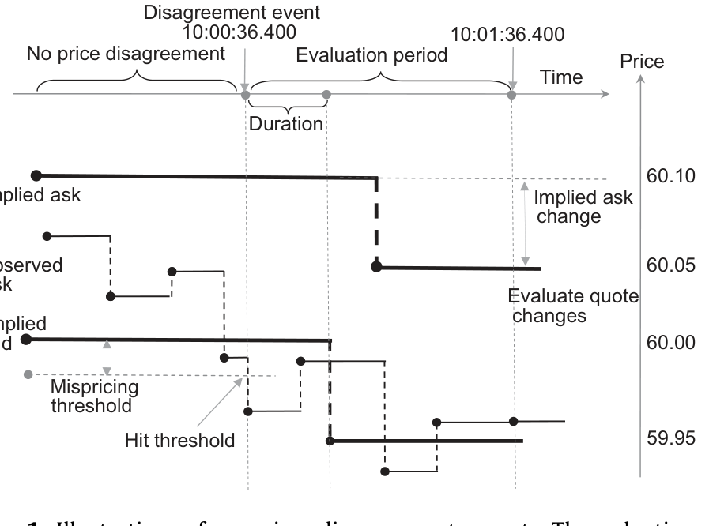
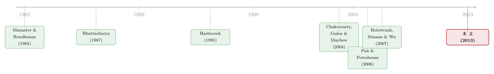

期权报价里，到底有没有「先知」？
本文读的是 Muravyev, Pearson & Broussard (2013, Journal of Financial Economics)：当期权报价和股票报价对同一只股票「各执一词」时，作者用 tick-by-tick 数据盯住这些「分歧时刻」，发现是期权报价低头去追股票，而不是反过来——也就是说，期权报价里并不含有股票报价尚未反映的、有经济意义的方向性信息。换句话说，期权市场几乎不参与标的股票的价格发现 (price discovery)。
1 一个看似已有定论的老问题
先抛一个问题：如果你能同时盯着一只股票的报价和它的期权报价，期权报价会不会提前告诉你股票接下来要往哪走？
这听上去不像个问题。长久以来，教科书和华尔街的直觉都偏向「会」。理由很漂亮：期权天然带杠杆，又没有卖空限制，所以一个手握内幕的人，理性的做法是去期权市场下注，而不是直接买股票（Black, 1975）。顺着这个逻辑，期权市场就该是消息灵通者的「earlier mover」，期权价格自然领先股票价格。
而且确实有一堆证据支持「期权里有信息」。最有说服力的是 Pan and Poteshman (2006)：他们用开仓交易算出的 put-call ratio，发现低比率的股票比高比率的股票，次日平均多赚 40 个基点以上。Chakravarty, Gulen, and Mayhew (2004) 更是直接把这件事量化了——他们估计期权市场的 Hasbrouck「信息份额 (information share)」高达 17%。
于是，「期权领先股票」几乎成了共识。
但作者在这里埋下了一个极其关键、却常被混为一谈的区分：「有些期权交易 (trades) 基于信息」，和 「期权报价 (quotes) 含有股票报价里没有的信息」，是两件完全不同的事。前者说的是有人拿着内幕去期权市场下注；后者说的是，做市商看到这些交易后，会不会把信息写进报价，从而让期权报价跑在股票报价前面。
这篇论文要回答的，是后一个问题。而它给出的答案，和那个流行的直觉恰好相反。
这个「trade 有信息 ≠ quote 有信息」的区分是全文的灵魂。一笔知情交易完全可以发生，但只要做市商没把它写进报价、或者写得比股票市场还慢，期权报价对预测股价就毫无增量价值。
2 研究问题
把问题钉死：期权的买卖报价，是否含有关于标的股票未来价格、且尚未被当前股票报价反映的方向性信息？
要回答它，得找到一个干净的「裁判时刻」——一个能让人确信「此刻股票市场和期权市场对股价的看法确实不一致」的瞬间。否则两个市场报价同涨同跌，你根本分不清是谁在领、谁在跟。
作者找到的裁判，是一价定律 (law of one price) 的违背。
3 识别策略：盯住「分歧时刻」
思路是这样的。通过看跌-看涨平价 (put-call parity) 关系，一组期权报价可以反推出一个「期权隐含的股票价格」。如果期权和股票对股价看法一致，这个隐含价应该落在股票真实的买卖价区间里。
但偶尔，它们会打架：期权隐含的买卖价区间，和股票真实的买卖价区间完全不重叠。这就是一次「价格分歧事件 (price disagreement event)」，本质上是一次一价定律的违背。作者用图 1 给出了这种事件的示意——隐含价格的「条带」一旦滑出股票报价的「条带」，分歧便被触发。

Figure 1: Illustration of a price disagreement event. Through time disagreementoccurswhenitgetsoutsidethestripe.The
抓住这个瞬间，接下来的逻辑就清澈了：分歧出现后，谁先动、谁去靠拢谁？
- 如果是期权报价调整、向股票价格靠拢 → 说明此前期权报价「错了」，是股票在领跑；
- 如果是股票报价调整、向期权隐含价靠拢 → 说明期权报价里藏着股票还没反映的信息，是期权在领跑、在做价格发现。
但真正关键的一步在于：股票和期权报价本来就会因为各种原因（而非这次分歧）而变动。所以不能光看分歧后两边怎么动，必须有个反事实。作者为此构造了一个匹配对照样本 (matched control sample)：对每一个分歧事件（处理组），用 Mahalanobis 距离 (Mahalanobis, 1936) 找到一批「除了不存在分歧、其余条件都相似」的观测作为对照组，然后比较两组里股票报价、期权隐含报价各自的变化——这正是项目评估文献里的经典平均处理效应思路 (Imbens and Wooldridge, 2009)。
于是问题被翻译成一句可检验的话：分歧事件中，股票报价的变化，和没有分歧时的「正常」变化，能区分得开吗？
4 看跌-看涨平价：把隐含股价算干净
识别的全部地基，是从期权报价里反推一个可信的隐含股价。这一步看似教科书，作者却处理得很讲究，值得把方程一步步摆出来。
如果是欧式期权，平价关系是：
$$ S_t = C_t(K,T) - P_t(K,T) + PV(D(t,T)) + K e^{-r(t,T)(T-t)} \tag{1} $$
直觉上，「持有股票」可以被「买一份看涨、卖一份看跌、加上一笔到期付行权价 K 的债券、再补上期间分红的现值」完美复制；无套利就要求两边相等。
可惜美股个股期权是美式 (American)，能提前行权，式 (1) 不会精确成立。于是作者写出更一般的形式：
这里的妙处是 \(v_t(K,T)\)。它本是美式看涨与看跌提前行权溢价之差，但作者让它一并吸收掉两个脏东西：从 Option Metrics 拿到的分红、LIBOR 利率与市场隐含值之间的偏差。这样一来，\(v_t(K,T)\) 就不是靠某个期权定价模型算出来的，而是用高频数据无模型 (model-free) 地估计出来——在每个交易日、对每个看涨-看跌配对，用报价中点估出欧式平价的偏离，再据此校准。最终算出的「期权隐含买价」和「期权隐含卖价」，已经把期权市场那个出了名的大买卖价差 (bid-ask spread) 老老实实考虑进去了。
正因为隐含价是带着区间算的，作者才敢说：当隐含区间和真实股票区间不重叠、且最近端的差距超过一个阈值时，这才是一次货真价实、连交易所会员都可能套利的一价定律违背，而不是测量噪声。
5 数据
- 数据源：Nanex 的 tick-by-tick 逐笔交易与报价数据，时间戳精确到
25毫秒，覆盖所有交易该合约的美国交易所。 - 样本：
36只流动性最高的美股 +3只 ETF（按 2003 年 3 月期权成交量挑选）及其期权。 - 区间：2003 年 4 月 17 日至 2006 年 10 月 18 日，共
882个交易日。 - 主样本：
81,024个价格分歧事件（严格的一价定律违背）。 - 大样本：用更宽松的分歧定义构造，近
450万个事件，约为主样本的55倍；平均每只股票每天发生130多次——分歧其实是家常便饭。 - 交易方向：股票用 Lee and Ready (1991) 算法；期权先用 quote rule，落在中点再退而用所在交易所的 BBO（Savickas and Wilson, 2003 证明 quote rule 对期权最优）。
这个样本有个特点值得记一笔：它专挑期权成交量最大的股票。好处是，如果连这些「期权市场摩擦最小」的票都看不到期权价格发现，那对更冷门的股票就更不用指望了——这让「无价格发现」的结论更难被「流动性太差」搪塞过去。
6 主要结果：是期权低头，不是股票回头
把所有事件叠起来看，画面非常清楚。
第一，调整的是期权，不是股票。 在处理组里，期权隐含股价显著地向真实股价移动；而真实股价并不向期权隐含价移动——它分歧时的行为，和对照组里没有分歧时的行为，统计上无法区分。换个角度看分布也一样：分歧事件带来的，是期权隐含报价分布的整体平移，真实股价的分布则几乎纹丝不动。
第二，分歧是被股价先动「逼」出来的。 分歧事件之前，股价已经先动了——表 1 显示，事件触发前 2 分钟的股价平均变动约 0.22%，前 10 秒约 0.12%，方向恰好就是会制造出这次分歧的方向。这直接否掉了另一种解释：「是期权报价自己抽风、乱跳出一个异常值，然后又回归」。不是的，是股票先走、期权没跟上。
第三，订单流的不对称。 分歧期间，期权市场常出现带方向的成交量 (signed option volume)，方向正是「会把期权报价推回去消除分歧」的那个方向；而股票市场没有异常的带方向成交量。这与「股票是对的、期权是错的」高度一致，同时也证明这些事件不是数据错误的产物——如果是脏数据，不会系统性地伴随这种方向明确的期权订单流。
第四，分歧消除得极快。 从分歧触发到股票报价重新回到期权隐含区间内，中位持续时间只有约 16 秒（两类分歧分别为 16.4 秒和 18.3 秒），隐含价差中位数约 11.2 美分。
第五，大样本复刻。 在那 450 万个事件的大样本里，结论一模一样：股票报价在分歧期间的变化，和没有分歧的相似情形没有区别；带方向的期权成交量依然指向「消除分歧」的方向，只是幅度更小——这正是预期之中，因为宽松定义下的分歧本就不是清晰的套利机会。这一步排除了「主样本的结论是一价定律违背这种异常时刻的特例」这一担忧。
第六，统计指标的旁证。 作者还为自己的样本算了 Hasbrouck (1995) 信息份额，结果始终在个位数（< 10%）。这既和「无经济意义的价格发现」自洽，也说明：相比 Chakravarty, Gulen, and Mayhew (2004) 用 1988–1992 数据估出的 17%，期权市场的价格发现在下降——而这恰恰能用 2000 年以后期权市场结构的剧变来解释。
为什么结构变化这么重要？在旧的场内 (floor) 交易结构里，成交所在交易所的做市商有信息优势；而在本文样本期，期权交易已基本电子化，做市商普遍用自动报价算法，报价与成交几乎瞬时同时传到股票和期权两个市场。于是期权做市商相对股票做市商不再有任何信息优势——期权报价自然没理由跑在股票报价前面。
7 文献脉络
这条线的起点，是 Manaster and Rendleman (1982)：他们用收盘交易价发现期权价格似乎领先股票价格。但那篇论文的样本期里，期权比股票多交易 10 分钟，「领先」很可能只是报价不同步的假象。
接着，Bhattacharya (1987) 是与本文最接近的研究：他不依赖具体计量模型，用 15 分钟报价快照模拟一个「股价低于（高于）期权隐含价就买入（卖出）、持有 15 分钟再平仓」的策略，结果平均收益接近零、扣掉价差后变负——没有证据表明期权领先股票。
然后，文献转向打磨计量方法：从 Anthony (1988) 的简单因果检验，一路演进到向量误差修正模型 (VECM)，并在 Hasbrouck (1995) 提出「信息份额」后，长成了一大支以统计份额为核心的文献，其代表作正是 Chakravarty, Gulen, and Mayhew (2004) 的 17%。Holowczak, Simaan, and Wu (2007) 用 2002 年数据得到更小的份额，并把差异归因于期权市场结构的转变。

而本文所处的位置很特别：它不去和 VECM 文献抢着报一个新的信息份额数字，而是回到一个更朴素、也更难反驳的问法——分歧发生时，到底是谁向谁靠拢？由此，它为那一大堆「统计上显著」的可预测性，补上了经济意义的体检。这正呼应了资产定价里那条强调「要同时看统计与经济显著性」的老传统（Jensen, 1978; Fama, 1991）。
关于「期权信息为何能预测股票收益」的另一种解释——其实是借券成本在作祟，可参见《期权里藏着的，不是先知，而是一张借券账单》；而期权市场微观结构里「过路费」如何被高频交易者收走，则可参见《你以为高频交易只搅动了股票，其实它在期权里收了一笔「过路费」》。
8 评论与延伸（Q&A + 研究方向）
(a) 几个可能的疑问
Q：这和 Pan & Poteshman (2006)「期权交易能预测股票收益」不是矛盾吗？
不矛盾，而且这正是全文最精巧的地方。Pan-Poteshman 说的是某些交易含有信息；本文说的是报价里没有股票报价之外的增量信息。一笔知情期权交易完全可以发生，但只要期权做市商没把它及时写进报价、或写得比股票市场还慢，期权报价对预测股价就没有增量价值。两者可以同时成立。
Q：为什么非要用一价定律违背这种极端时刻？会不会以偏概全？
恰恰相反，这是为了干净。平时两边报价同涨同跌，根本分不清谁领谁跟；只有在两个市场公开「吵架」时，你才能确信此刻它们对股价看法不同，从而干净地观察谁去靠拢谁。而且作者用 450 万事件的大样本（宽松定义）证明，结论不是极端时刻的特例。
Q：匹配对照样本真的可信吗？会不会匹配本身有问题？
这是识别的关键软肋，也是作者着力最多之处。他们用 Mahalanobis 距离匹配「除分歧外其余相似」的观测，并同时做了无条件的平均处理效应和加入控制变量的条件分析，两套结果一致。当然，匹配永远只能控制可观测变量，无法排除某个未观测因子同时驱动分歧与股价——这是所有匹配设计共同的命门。
Q：16% 信息份额下降到个位数，是方法不同还是市场真变了？
作者倾向后者，且给了机制：2000 年后期权交易电子化、自动报价普及，期权做市商相对股票做市商不再有信息优势。Holowczak, Simaan, and Wu (2007) 也独立观察到结构转变后份额下降。但严格说，样本、股票池、频率都不同，无法做到完全可比——这是诚实该承认的。
Q：结论只对 39 只大票成立，能外推吗？
方向上反而更稳。作者特意挑期权流动性最好的票，因为这些票「期权价格发现的障碍最小」。如果连它们都看不到价格发现，更冷门的票只会更没有。但反过来，对那些信息不对称极强的小票，能否出现真正的期权领先，本文无法回答。
Q：那「期权领先股票」的直觉就彻底错了？
也不必。直觉的对的部分是「知情者爱用期权」；错的部分是「所以期权报价领先」。在现代电子化、报价瞬时同步的市场里，信息会几乎同时打到两个市场，期权报价没有结构性理由跑在前面。直觉描述的是一个旧市场结构。
(b) 几个可能的研究问题与提案
1. 把这套「分歧时刻」识别搬到公司债与 CDS。 【经济故事】债券现货与 CDS 之间也有一个「平价」式的无套利关系（CDS-bond basis）。当两者隐含的违约风险打架时，是谁去靠拢谁？这能识别信用风险的价格发现究竟在现货还是衍生品市场。 【可行性】中。需要 TRACE 逐笔债券成交 + CDS 日内报价（Markit/交易商数据较难拿到日内），识别策略可直接复用本文的「不重叠区间 + 匹配对照」。难点在 CDS 日内数据稀疏，分歧事件可能太少。
2. 外资持有人占比是否改变价格发现的归属？ 【经济故事】若一只股票/债券的边际定价者更多是跨境投资者，信息到达两个市场的时滞可能不同（时区、交易时段）。外资重仓的标的，会不会出现衍生品真的领先现货的窗口？ 【可行性】中偏低。需要把持有人结构（如 13F、跨境持仓）与日内分歧事件拼接，识别上要担心持有人结构与流动性内生。doable 但工程量大。
3. 流动性危机期间，谁在领跑会反转吗？ 【经济故事】平时是股票领先期权；但在 2008、2020 这类做市商资产负债表紧绷的时刻，股票现货流动性可能比期权更早枯竭，价格发现的方向是否短暂反转？ 【可行性】高。本文方法可直接套用到危机窗口，数据为公开的 tick 数据。可与公司债流动性危机研究互证（参见《差点死掉的那个市场：一场公司债流动性危机的微观解剖》）。
4. 分歧持续 16 秒，这 16 秒里谁在套利？ 【经济故事】中位 16 秒的窗口里，带方向的期权成交量在「修正」期权。这些修正性成交是谁下的——做市商、高频套利者，还是知情者？拆开成交主体能直接回答价格发现的微观机制。 【可行性】中。需要带交易者类型/账户标识的期权成交数据（如 OCC 的 customer/firm/market-maker 分类），识别清晰，数据可得性是主要约束。
9 我的判断
这篇论文最大的贡献，是把一个被「统计份额」长期主导的问题，拉回到经济意义的层面，并用一个极其干净的「谁向谁靠拢」实验给出了反直觉但稳健的答案。它没有去争论信息份额应该是 17% 还是 8%，而是直接问：当两个市场公开打架时，股票报价会不会被期权拽着走？答案是不会。这种「降维」式的提问方式，本身就很值得学习。
但有两点担忧值得留着。其一是匹配的不可观测性：匹配对照样本控制的是可观测特征，若存在某个未观测冲击同时触发分歧并推动股价，结论会被污染——这是所有匹配设计的共同软肋，本文也不例外。其二是外部有效性：样本是 2003–2006 年、39 只期权最活跃的大票，结论对小票、对今天碎片化更严重、做市更算法化的市场是否依然成立，并不自动保证。
我接下来最想看到的，是把这套「分歧时刻」识别搬到信用市场：在公司债现货与 CDS、或同一发行人不同券种之间，价格发现到底落在哪一边、又如何随流动性周期而漂移？那将把这篇微观结构杰作，接到一个我更关心的市场上去。
参考文献
- Bhattacharya, M. (1987). Price changes of related securities: the case of call options and stocks. Journal of Financial and Quantitative Analysis.
- Black, F. (1975). Fact and fantasy in the use of options. Financial Analysts Journal 31(4), 36–72.
- Chakravarty, S., Gulen, H., Mayhew, S. (2004). Informed trading in stock and option markets. Journal of Finance 59(3), 1235–1257.
- Fama, E.F. (1991). Efficient capital markets: II. Journal of Finance 46(5), 1575–1617.
- Hasbrouck, J. (1995). One security, many markets: determining the contributions to price discovery. Journal of Finance 50(4), 1175–1199.
- Holowczak, R., Simaan, Y., Wu, L. (2007). Price discovery in the US stock and stock options markets: a portfolio approach. Review of Derivatives Research 9, 37–65.
- Imbens, G., Wooldridge, J. (2009). Recent developments in the econometrics of program evaluation. Journal of Economic Literature 47(1), 5–86.
- Jensen, M. (1978). Some anomalous evidence regarding market efficiency. Journal of Financial Economics 6(2–3), 95–101.
- Lee, C., Ready, M.J. (1991). Inferring trade direction from intraday data. Journal of Finance 46(2), 733–746.
- Mahalanobis, P.C. (1936). On the generalized distance in statistics. Proceedings of the National Institute of Sciences of India 2, 49–55.
- Manaster, S., Rendleman Jr., R.J. (1982). Option prices as predictors of equilibrium stock prices. Journal of Finance 37(4), 1043–1057.
- Muravyev, D., Pearson, N.D., Broussard, J.P. (2013). Is there price discovery in equity options? Journal of Financial Economics 107(2), 259–283.
- Pan, J., Poteshman, A.M. (2006). The information in option volume for future stock prices. Review of Financial Studies 19(3), 871–908.
- Savickas, R., Wilson, A.J. (2003). On inferring the direction of option trades. Journal of Financial and Quantitative Analysis 38(4), 881–902.